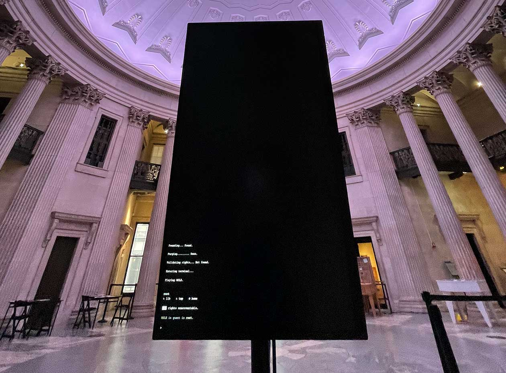
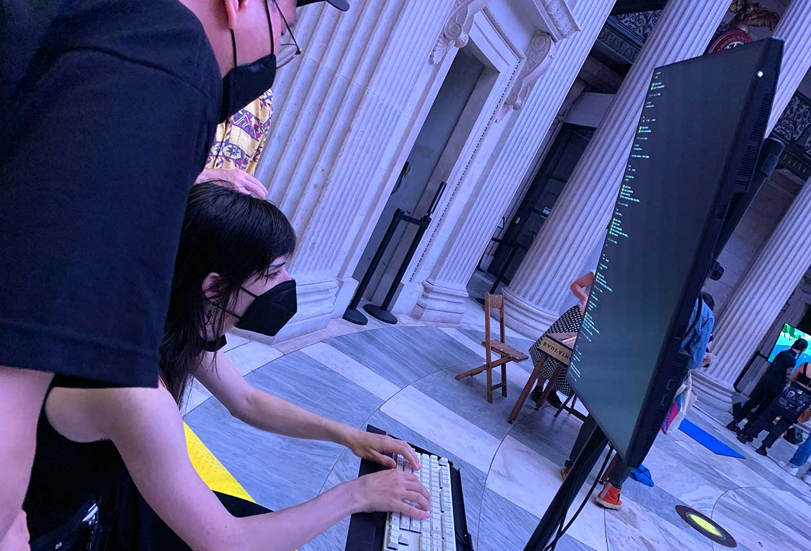

Ninth Amendment
The enumeration in the Constitution, of certain rights, shall not be construed to deny or disparage others retained by the people.
Photo by John Berens
Ryan Kuo
Father Figure, 2022
Computer software, keyboard, display stand
Dimensions variable
Artist Commentary
Father Figure is a text adventure that presents initially as a computer terminal. Using a command-line interface that is intentionally opaque and limiting, one is instructed to locate and reclaim one’s missing rights by applying basic text commands. The game begins in earnest when one learns that other commands can be issued to exit the command-line “shell.” After exiting the terminal, one finds oneself in a low-fidelity simulation of nature, the space where one’s natural rights can be expressed. This leads one eventually to break and enter a House upon pursuing acts of either intentional or accidental violence that echo the US Capitol insurrection of January 6, 2021. What one must confront in the House is the open question of what rights are ultimately “known.”
Father Figure considers the Ninth Amendment as a mechanism of whiteness and inserts the user into its scaffold, a text-based simulation of the dynamic at play. In computer usage, the delegation of “rights” does not guarantee freedom but places the user in an inherently compromised position, dependent on the system administrator. This, in turn, prompts a user to grapple directly with how “rights” are defined, granted, and denied—and by whom.
The encounter with the computer aims to impart a material sense of a contradiction at the center of American identity. The Ninth Amendment, which accounts for “certain” rights enumerated as well as “others retained” elsewhere, implies that the rights of the people by nature remain in excess of what can be described. We have a known constitution, but we do not know what constitutes the exception.
This contradiction is inevitably linked to whiteness, the silent majority that holds its tacit rights in reserve like an arms stockpile. It can be argued that the American exception is freedom from accountability, a freedom symbolized and protected by the safety mechanism built into the American contract. For users of the system, then, to what extent is the American dream coterminous with the guarantees of white supremacy? What can define the limit of self-governance?
Photo courtesy The Frank-Ratchye Studio for Creative Inquiry
Curator Commentary
One way to think about game design is the creation of spaces of possibility inside of which players play. The Ninth Amendment concerns itself with making clear that the space of possibility defined by the Constitution and its amendments will always be incomplete and subject to change. Depending on your perspective, the Ninth Amendment functions as an acknowledgment, a backstop, a tool, or a trap. As an acknowledgment, the Ninth recognizes the limits of its authors’ ability to capture in the Constitution all important rights, both those known and those yet to be known. As a backstop, the Ninth served to placate those concerned about the Bill of Rights being interpreted as fully defining individual rights under the Constitution. As a tool, the Ninth affords those with deep knowledge of the Constitution the tools to expand the rights minimally outlined in the original document and its amendments. And as a trap, the Ninth allows those in power to change the rules to benefit or harm. In all four cases, the Bill of Rights is made from and about language, and the ways it and the larger Constitution enumerate if not a ruleset, then a value system for the United States.
Ryan Kuo’s Father Figure investigates the Ninth using the text-adventure genre of games within the context of a command line operating system. Players of text-adventure games interact with a world presented in prose using a very specific dialect to navigate and engage with the story world. For those with fluency in the syntax and vocabulary, engaging the space of possibility authored by the game’s creators can be a richly satisfying experience. To someone not versed in the syntax, text adventures (and command line interfaces) can be frustrating—you quite literally can’t do anything if you don’t know the right words and phrases to move through and interact with the objects and inhabitants.
Kuo’s work is a playable metaphor of the relationship one can have with the space of possibilities for the Constitution as created by the Ninth Amendment. If versed in the logics of text adventures (or US legal theory or a command line interface), one can move through Father Figure; if not familiar with the internal logics, one can at best do nothing, and, more likely, will have the effects of the game (or legal system) happen to them. Kuo asks us to think about who is and who is not allowed to write the new rights, and who does and does not benefit from these new rights.
Ryan Kuo creates works that are process-based, diagrammatic, and caught in a state of argument. He uses video games, productivity software, web design, and text to produce circuitous and unresolved movements that track the passage of objects through white escape routes. He holds a Master of Science in Art, Culture and Technology from MIT, and has held residencies at Pioneer Works and the Queens Museum Studio Program. Kuo’s works have been shown in venues such as the Whitney Museum of American Art, Queens Museum, TRANSFER, and bitforms gallery, and are distributed online at left gallery. His recent and forthcoming projects include File: A User’s Manual, an artist’s book about aspirational workflows modeled after software guides for power users; and Faith, a conversational AI agent that zealously embodies the blind “faith” underpinning both white supremacy and miserable white liberalism.
Kuo lives and works in New York City. He is not a programmer.
1
Freedom of Religion, Speech, Press, Assembly, Petition
Congress shall make no law respecting an establishment of religion, or prohibiting the free exercise thereof; or abridging the freedom of speech, or of the press; or the right of the people peaceably to assemble, and to petition the Government for a redress of grievances.
2
The Right to Bear Arms
A well regulated Militia, being necessary to the security of a free State, the right of the people to keep and bear Arms, shall not be infringed.
3
The Housing of Soldiers
No Soldier shall, in time of peace be quartered in any house, without the consent of the Owner, nor in time of war, but in a manner to be prescribed by law.
4
Unreasonable Search and Seizure, Warrants, Probable Cause
The right of the people to be secure in their persons, houses, papers, and effects, against unreasonable searches and seizures, shall not be violated, and no Warrants shall issue, but upon probable cause, supported by Oath or affirmation, and particularly describing the place to be searched, and the persons or things to be seized.
5
Due Process, Self-Incrimination, Eminent Domain
No person shall be held to answer for a capital, or otherwise infamous crime, unless on a presentment or indictment of a Grand Jury, except in cases arising in the land or naval forces, or in the Militia, when in actual service in time of War or public danger; nor shall any person be subject for the same offence to be twice put in jeopardy of life or limb; nor shall be compelled in any criminal case to be a witness against himself, nor be deprived of life, liberty, or property, without due process of law; nor shall private property be taken for public use, without just compensation.
6
Rights of Defendents in Criminal Trial
In all criminal prosecutions, the accused shall enjoy the right to a speedy and public trial, by an impartial jury of the State and district wherein the crime shall have been committed, which district shall have been previously ascertained by law, and to be informed of the nature and cause of the accusation; to be confronted with the witnesses against him; to have compulsory process for obtaining witnesses in his favor, and to have the Assistance of Counsel for his defense.
7
Rights in Civil Cases
In suits at common law, where the value in controversy shall exceed twenty dollars, the right of trial by jury shall be preserved, and no fact tried by a jury, shall be otherwise re-examined in any court of the United States, than according to the rules of the common law.
8
Excessive Bails, Fines, or Punishment
Excessive bail shall not be required, nor excessive fines imposed, nor cruel and unusual punishments inflicted.
9
Additional Fundamental Rights of People
The enumeration in the Constitution, of certain rights, shall not be construed to deny or disparage others retained by the people.
10
Separation of Powers and Federalism
The powers not delegated to the United States by the Constitution, nor prohibited by it to the States, are reserved to the States respectively, or to the people.